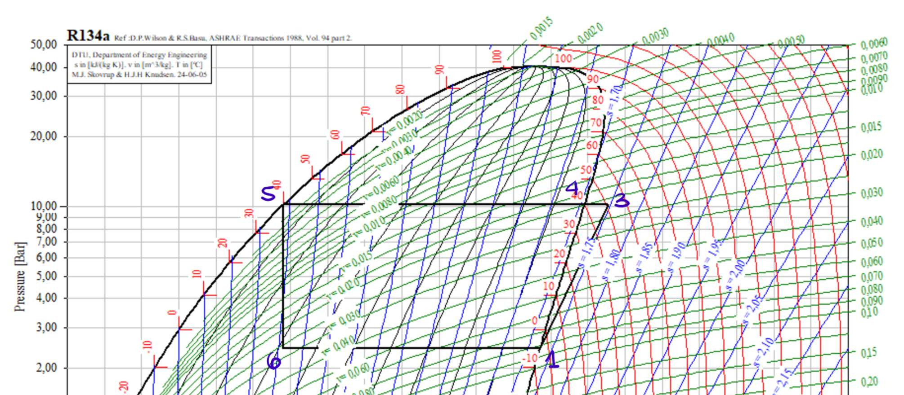
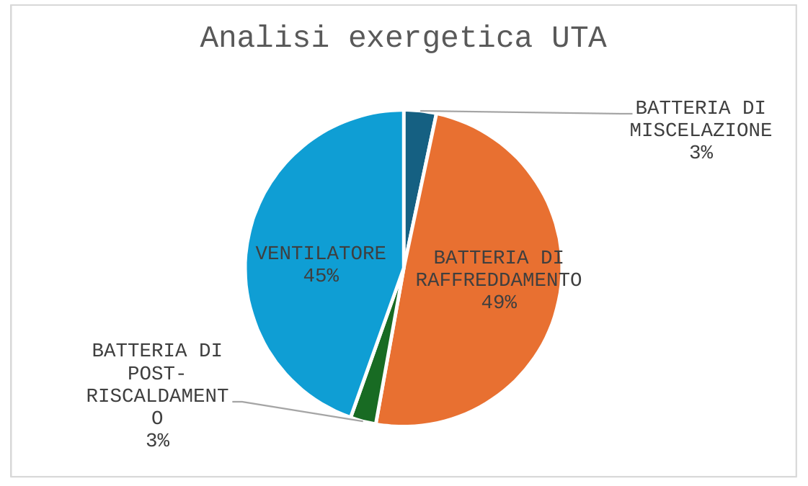

The building and the system
The building has two zones with different needs. The laboratories are conditioned by an air handling unit (AHU) that supplies treated air through ducts; the offices have one fan coil per room, fed by a water network. For summer cooling we planned two separate refrigeration cycles, because the two systems work at very different temperatures: the AHU air has to be brought from 24 °C to about 4 °C, the fan-coil water from 12 °C to 7 °C.
Thermal loads and AHU
From the geometric survey we computed the loads due to transmission through walls, roof and windows, to ventilation and to solar radiation on the glazed surfaces, keeping laboratories and offices separate. The total load is about 283 kW in summer and 145 kW in winter.
On these values we sized the AHU coils, i.e. preheating, humidification, cooling and reheating, plotting the moist-air transformations on the psychrometric chart for the two seasonal cases.


Refrigeration cycles
Both cycles are single-stage vapour-compression cycles with R134a, condensing at the outdoor temperature of 30.5 °C. For the cycle that feeds the AHU, with a compressor isentropic efficiency of 0.8, we obtained a COP of about 3.7 and a compression ratio of 4.2. The cycles were plotted and checked with CoolPack.

Distribution networks
For the offices we selected the fan coils from a catalogue and sized the water network: flow rates for each office, pipe diameters, and distributed and local pressure losses along the most unfavourable path, up to the choice of the pump. For the laboratories we sized the rectangular air ducts on the winter flow rate, the highest, limiting the velocity at the outlets to 8 m/s to keep noise down.
Energy analysis and Superbonus
Using the typical daily load curve of a commercial building, we estimated the summer consumption and operating costs of chillers and fans. Then we simulated the measures of the Italian Superbonus 110% incentive: with external wall insulation the wall transmittance drops from 1.41 to 0.21 W/m²K, transmission loads roughly halve and the required air and water flow rates decrease. The daily operating cost goes down from about €126 to €109. The COP, instead, stays almost unchanged, because thermal load and compressor power decrease together.

Exergy analysis
The exergy balance, for the whole system and component by component, shows where most of the energy quality is lost. In the refrigeration cycles the irreversibilities are concentrated in the compressor, condenser and expansion valve, and the overall exergy efficiency is around 26–28%. In the AHU, with an overall efficiency of 33%, almost half of the irreversibilities are in the cooling coil and another significant part in the fan: these are the components to work on first.

Fan-coil heat exchanger
Finally, using the ε-NTU method, we sized the cross-flow finned copper coil of the fan coil in the winter condition, the most demanding one. We computed the air-side and water-side convective coefficients from the Colburn factors, then the fin efficiency and the overall heat transfer coefficient, about 480 W/m²K. The result is a heat transfer area of 0.33 m² and an eight-row coil 0.81 m long and 0.30 m high.
What I learned
This project showed me the complete path of a building services system, where each choice depends on the previous one: from loads to flow rates, from flow rates to components, from components to costs. The exergy analysis in particular taught me to look beyond the energy balance to understand where a system really wastes energy, and the Superbonus comparison taught me to evaluate an intervention from an economic point of view too.